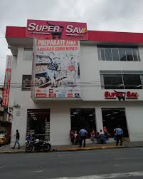

Profesora de Contrato
Durante varios años trabajé como profesora contratada en instituciones educativas, enseñando con pasión y compromiso a niños y jóvenes.
Ver InstituciónAtención al Cliente Super SAV
También tuve experiencia en el área de atención al cliente, donde desarrollé habilidades de comunicación, empatía y solución de problemas.
Ver DetallesProducción y Comercialización de Leche
He desarrollado un emprendimiento propio de producción y comercialización de leche, aplicando conocimientos técnicos y digitales adquiridos en mi carrera. Esto me ha permitido gestionar procesos, controlar calidad y usar herramientas digitales para mejorar la distribución y la visibilidad de Productos
Ver Emprendimiento